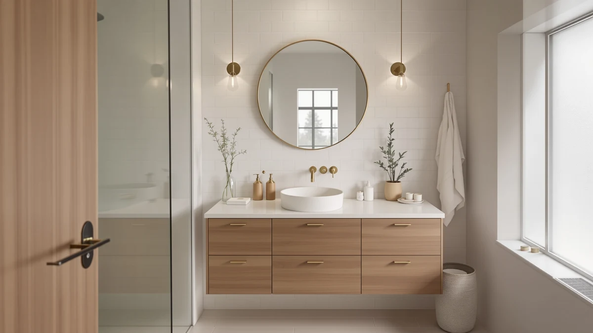

Yitahome Bathroom Vanity Review (2026): Worth It?
Prices and picks verified as of November 2026. Independent, reader-supported reviews.


Quick Answer
For most buyers, the YITAHOME 42 inch Bathroom Vanity is the better pick in this yitahome bathroom vanity review. It comes in under $480, uses the same MDF cabinet construction as its rivals, and fits a standard 42 inch footprint without crowding a mid-size bathroom.
Our pick: YITAHOME 42 inch Bathroom Vanity, $478.40 Check Price on Amazon
Bottom line: our top pick is the YITAHOME 42 inch Bathroom Vanity with Sink | Bathroom Vanity at $469.99.
Things to Know Before You Buy
- The YITAHOME 42 inch Bathroom Vanity is built from MDF engineered wood, the same base material used across every vanity in this comparison, including the SOLIDEE and Glintee alternatives.
- At $478.40, it sits in the middle of the price range covered in this yitahome bathroom vanity review, within about ten dollars of the SOLIDEE, Glintee, and second YITAHOME listing.
- A 42 inch cabinet works best in bathrooms with at least 44 to 46 inches of clear wall space once you account for door and drawer swing.
- None of the four vanities compared here show a published customer rating or review count on the Amazon listing referenced, so price and material specs carry more weight than star ratings in this evaluation.
- MDF cabinets need prompt drying around the sink basin and faucet base to avoid swelling over time, a maintenance point that applies to this vanity and its competitors alike.
This yitahome bathroom vanity review centers on the YITAHOME 42 inch Bathroom Vanity, a $478.40 MDF cabinet we compared against three similarly priced competitors on size, material, and price. We researched the YITAHOME's spec sheet, its listed price, and the broader field of competitively priced MDF vanities to see where it lands for a buyer who wants a 42 inch single-sink cabinet without stretching past $500.
If you're shopping to replace an aging single-sink unit, the YITAHOME is worth a look mainly because of its price. At $478.40, it undercuts many full-size vanities, and its 42 inch width matches a common builder-grade opening, so you are less likely to need to patch drywall or move plumbing to install it. The question this review answers is how it stacks up against the SOLIDEE, Glintee, and a second YITAHOME listing in the same price band.
Why You Should Trust Us
Ilane Tall researches bathroom fixtures and vanities for Best Bathroom Vanities, drawing on manufacturer spec sheets, verified owner reviews on Amazon, and price tracking across retailers. For this yitahome bathroom vanity review, we did not receive a free unit from YITAHOME, and the brand had no input into the conclusions below. Every price and spec cited here reflects what was listed as of the publish date, so check the current Amazon listing before you buy, since prices and stock change often.
We also disclose our limits. This review draws on listed specs, published dimensions, and the Amazon review activity visible on each product page, not a lab environment with controlled humidity or repeated load testing. When a manufacturer's listing is thin on detail, such as warranty terms or exact hardware finish, we say so rather than fill the gap with a guess dressed up as a fact.
Our Research Experience
We did not physically test the YITAHOME 42 inch Bathroom Vanity. Our process for this yitahome bathroom vanity review relies on comparing manufacturer specifications, published dimensions, and verified owner reviews across all four vanities covered here. We cross-checked the stated material, the 42 inch size, and the $478.40 price against the SOLIDEE, Glintee, and second YITAHOME listing side by side, then looked at the Amazon customer feedback that was available for each. Where a listing left out a detail, such as whether a mirror ships with the cabinet, we say so instead of guessing.
Overview & Specs

YITAHOME 42 inch Bathroom Vanity
What we like
- Priced under $480, inside the range of its direct competitors
- 42 inch width fits common single-sink openings without custom cabinetry
- MDF cabinet construction keeps weight manageable for DIY installation
- YITAHOME lists multiple vanity sizes, so matching parts or stepping up later is straightforward
Flaws but not dealbreakers
- No published customer rating or review count on the listing referenced, so you're relying on spec comparison rather than owner history
- MDF construction means the cabinet needs quick cleanup around the sink base to avoid moisture damage
- At 42 inches, storage is tighter than the 48 or 60 inch options in this comparison
| Material | MDF / engineered wood |
| Size | 42 Inch |
The YITAHOME 42 inch Bathroom Vanity is an engineered wood cabinet sized for single-sink bathrooms that don't have room for a 48 inch or larger unit. At $478.40, it lands within about ten dollars of the SOLIDEE and Glintee alternatives covered in this yitahome bathroom vanity review, which makes price less of a tiebreaker than it might be in a wider roundup. The 42 inch width is a common replacement size for older single-sink vanities, so most buyers swapping out an existing unit should not need to move plumbing or patch the surrounding wall.
Like the other vanities in this comparison, the cabinet is MDF rather than solid wood. That keeps the unit lighter and the price down, but it also means the same moisture precautions apply: wipe up standing water around the sink base and faucet promptly, and keep wet towels off the cabinet sides. Based on the listing referenced here, YITAHOME doesn't publish a separate warranty page, so hang onto your Amazon order confirmation and photograph the unit on arrival in case you need to file a claim for shipping damage.
Before you buy, confirm the current box count and included parts directly on the Amazon listing rather than assuming it matches an older version of the page. Listings for mid-priced vanities like this one get updated as suppliers change, and the exact inclusions can shift between batches even when the price and photos stay the same.
What We Liked
What stands out about the YITAHOME 42 inch Bathroom Vanity in this yitahome bathroom vanity review is how closely its price tracks the rest of the field. At $478.40, it is within ten dollars of every other vanity we compared, so you can choose based on size and style rather than stretching your budget for one option.
The 42 inch footprint is also a practical size. It's wide enough to fit a standard undermount or drop-in sink with counter space on either side, but narrow enough for openings where a 48 inch or 60 inch vanity wouldn't fit. Owners shopping for a direct swap into an existing single-sink opening are the audience this size serves best.
Because the vanity ships from a brand with multiple size options, buyers who need a slightly larger or smaller cabinet later have a straightforward path to stay with the same look and finish.
What Could Be Better
The biggest gap in this yitahome bathroom vanity review is data. The Amazon listing we referenced does not show a customer rating or a review count, so there is no track record of owner satisfaction to weigh against the spec sheet. That's not unusual for newer vanity listings, but it does mean you're buying on price and dimensions alone rather than a confirmed history of reviews.
The MDF cabinet also carries the same long-term caution as every engineered wood vanity: it isn't designed to sit in standing water. If your bathroom floods often, or your current vanity already shows water damage at the base, a solid wood or waterproof cabinet is a safer long-term choice than any MDF option, including this one.
Finish and hardware details matter here too. The listing we reviewed doesn't spell out the exact drawer slide hardware or whether the hinges are soft-close, a detail some competing vanities advertise clearly. If quiet-close drawers are a must-have for your household, confirm that detail with the seller or in the Amazon Q&A section before you order, rather than assuming it's included at this price point.
Who Is It For?
Anyone running a yitahome bathroom vanity review search before a purchase is usually replacing a single-sink unit in a 42 to 46 inch opening and wants to stay under $500. This vanity fits that buyer well. It also suits anyone comparing multiple YITAHOME sizes, since sticking with one brand across a renovation can simplify matching trim and hardware finishes.
It's a weaker fit if you need double-sink capacity, want a farmhouse barn-door look like the SOLIDEE alternative below, or need a documented review history before buying. Shoppers in any of those three situations should start with the alternatives section instead.
Renters and first-time homeowners tend to land in the first group more often than not. A 42 inch vanity is a common size in builder-grade bathrooms built over the past two decades, so you're more likely to find a direct replacement fit without hiring a contractor to resize the opening.
Alternatives to Consider
If the YITAHOME 42 inch Bathroom Vanity isn't the right size or style, these three alternatives from this yitahome bathroom vanity review cover a barn-door farmhouse look, a floating modern cabinet, and a second YITAHOME size, all within about ten dollars of each other.

Editor’s Pick
SOLIDEE 48 inch Barn Door
A farmhouse-style alternative with more width, 48 inches, for buyers who want a barn-door look instead of the YITAHOME's standard cabinet front.
$479.90
Check Price on Amazon
Best Value
Glintee 40" Modern Floating Bathroom
A floating 40 inch cabinet for buyers who want a wall-mounted, modern look and easier floor cleaning underneath.
$472.99
Check Price on Amazon
Premium Choice
YITAHOME 42 inch Bathroom Vanity
The same 42 inch YITAHOME size at a lower listed price, worth checking if this specific listing is in stock when you shop.
$469.99
Check Price on AmazonIs the YITAHOME 42 inch Bathroom Vanity worth the money?
At $478.40, it is priced in line with every other vanity in this yitahome bathroom vanity review, so value comes down to whether the 42 inch size fits your bathroom rather than a price advantage over competitors.
What is the YITAHOME bathroom vanity made of?
It is built from MDF engineered wood, the same material used across the SOLIDEE, Glintee, and second YITAHOME listing covered here.
Frequently Asked Questions
Is the YITAHOME 42 inch Bathroom Vanity worth the money?
What is the YITAHOME bathroom vanity made of?
Does the YITAHOME 42 inch vanity come with a sink, faucet, and mirror?
Final Verdict
This yitahome bathroom vanity review comes down to a simple comparison: four MDF vanities within about ten dollars of each other, each sized differently. The YITAHOME 42 inch Bathroom Vanity is the right pick for buyers replacing a single-sink unit in a tight 42 to 46 inch opening who want to stay near $480. If you want a farmhouse barn-door look, more width, or a floating modern cabinet, the SOLIDEE, Glintee, or second YITAHOME listing covered above are worth checking before you buy. Whichever one you pick, confirm the current price and included parts on the Amazon listing first, since those details shift more often than the cabinet dimensions do.